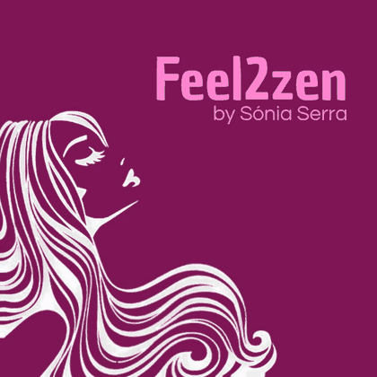

Massage and beauty care in Tires, Cascais
A moment just for you. Massage, reflexology, nails, waxing, lashes and beauty care in S. Domingos de Rana. Slow down, breathe, and let us look after you.

What we do
Treatments designed to relax and to care.
Massage
Relaxing, therapeutic, lymphatic drainage, anti cellulite, Hawaiian, bamboo, hot oil and rituals.
Reflexology
Pressure on points of the feet and hands to ease tension and restore energy.
Hands and feet
Manicure, pedicure, gel polish, gel, acrylic and paraffin treatments.
Waxing
Wax and threading for face and body, by area or as a pack.
Lashes
Extensions, maintenance and lifting for a more defined look.
Face and body
Facial cleansing, mini facial, body exfoliation, cavitation and radiofrequency.
Services and prices
Pick a category.
Hands and feet
Waxing
Massage
Reflexology
Face
Body and more
Prices may change. Always confirm when you book.
Meditation
Five minutes of calm, wherever you are.
Breathe in for 4 seconds, hold for 2, breathe out for 6.
- 1. Sit comfortablyBack straight but relaxed, shoulders loose, hands resting in your lap.
- 2. Follow your breathDon't try to control it. Just notice the air coming in and going out.
- 3. Come back when you driftThoughts will show up. Acknowledge them and return to your breath, without judging yourself.
- 4. Finish slowlyWiggle your fingers, open your eyes and take this calm into the rest of your day.
About us
Our space opened its doors on 17 September 2016 to promote physical and emotional well-being for everyone who visits us.
You will be looked after by a professional trained in several areas, so you always feel in good hands.
We have a pleasant space with ambient music, not far from the hustle of daily life, yet a place where you can take refuge from everyday stress.
Feel2Zen is where your well-being begins
Frequently asked questions
Where is Feel2Zen?
At Rua do Mercado nº 48A, Tires, 2785-630 S. Domingos de Rana, in the municipality of Cascais, Portugal.
What are your opening hours?
Monday to Wednesday and Friday to Saturday, from 10am to 2pm and from 3pm to 7:30pm.
How do I book a treatment?
You can book online at buk.pt/feel2zen or call 912 508 447.
What services do you offer?
Massage, reflexology, lymphatic drainage, manicure, pedicure, gel and acrylic nails, waxing and threading, lash extensions and lift, facial cleansing and other beauty and wellness treatments.
Contact
The quickest way to book is online.
Address
Rua do Mercado nº 48A, Tires
2785-630 S. Domingos de Rana
Phone and e-mail
Opening hours
Monday to Wednesday
10h – 14h · 15h – 19h30
Friday and Saturday
10h – 14h · 15h – 19h30